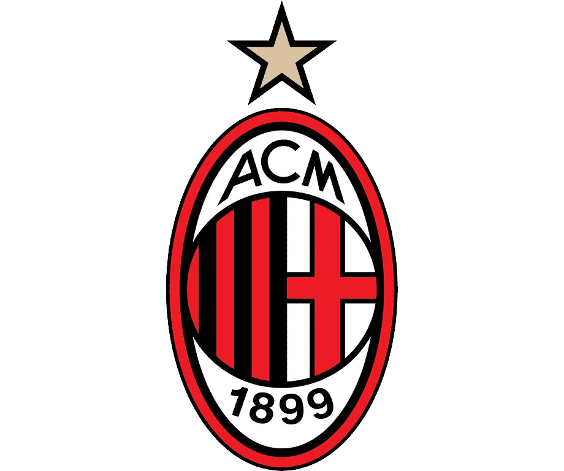

Associazione Calcio Milan

Tudo sobre o Milan na Champions league
 10.37.51_cf4e788c.jpg)
O AC Milan é um dos clubes mais bem-sucedidos na história da UEFA Champions League. Eles ganharam o torneio sete
vezes, em 1963, 1969, 1989, 1990, 1994, 2003 e 2007. O clube italiano teve alguns momentos memoráveis na
competição, incluindo vitórias sobre equipes como Barcelona, Real Madrid e Liverpool em finais emocionantes. Sua
história na Champions League é marcada por jogadores lendários, como Paolo Maldini, Franco Baresi, Marco van
Basten, Ruud Gullit, Andriy Shevchenko, entre outros. Apesar de alguns anos menos bem-sucedidos recentemente, o
AC Milan continua sendo uma potência histórica no futebol europeu.
Sobre os jogadores que foram cruciais para o titulo
- 1. Paolo Maldini: Um dos maiores defensores da história do futebol, Maldini era conhecido por sua classe e
liderança. Ele era uma figura central em várias conquistas do Milan na Champions League.
- 2. Franco Baresi: Outra lenda defensiva do Milan, Baresi foi um pilar na defesa durante os anos de sucesso
do
clube na década de 1980 e 1990.
- 3. Marco van Basten: Um dos maiores atacantes de todos os tempos, van Basten marcou gols cruciais para o
Milan
em suas conquistas da Champions League.
- 4. Ruud Gullit: Versátil e talentoso, Gullit foi fundamental para o sucesso do Milan, contribuindo com gols
e
liderança em campo.
- 5. Andriy Shevchenko: Um dos maiores artilheiros da história do Milan, Shevchenko foi uma peça fundamental
em
sua conquista da Champions League em 2003.
- 6. Clarence Seedorf: Um meio-campista completo, Seedorf foi um dos jogadores mais importantes do Milan
durante
sua era de sucesso na Champions League.